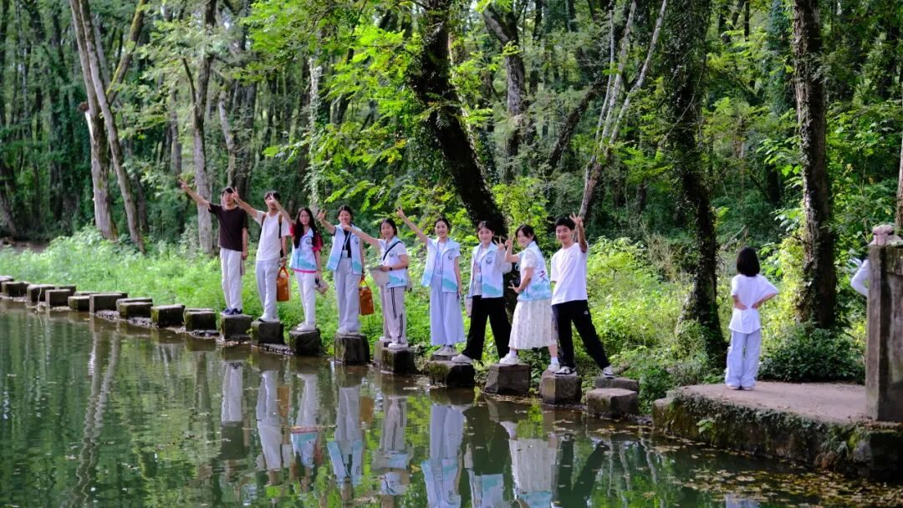
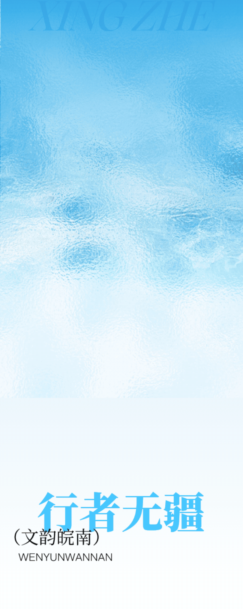
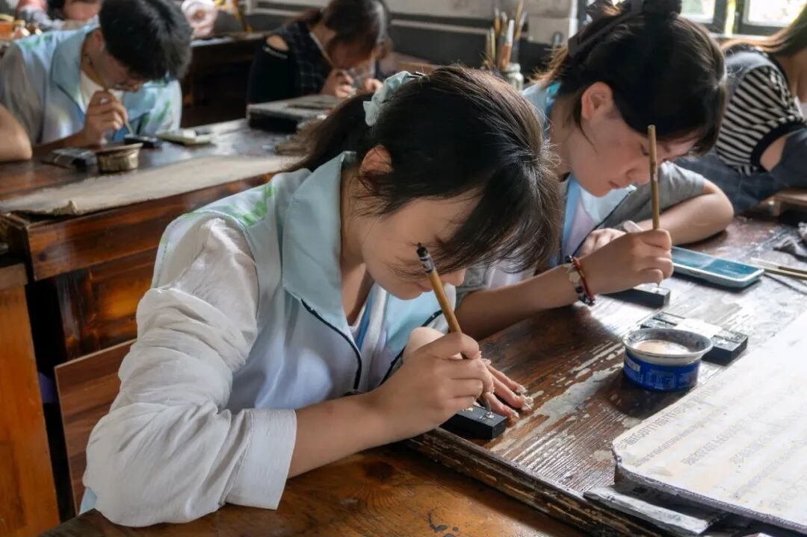
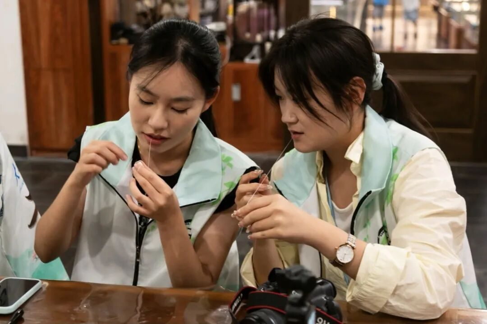
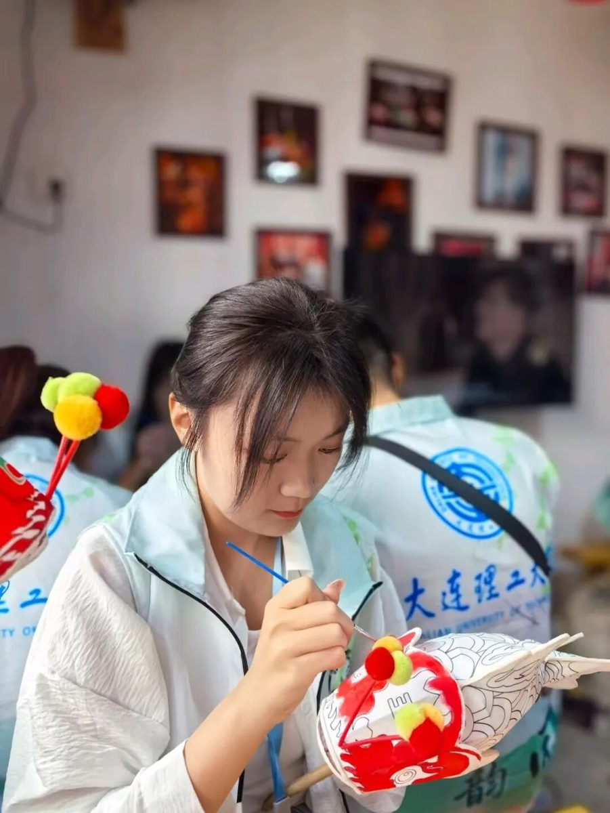
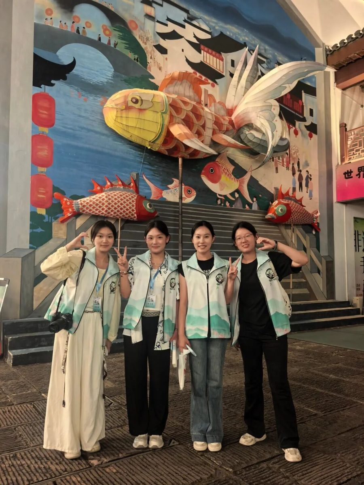
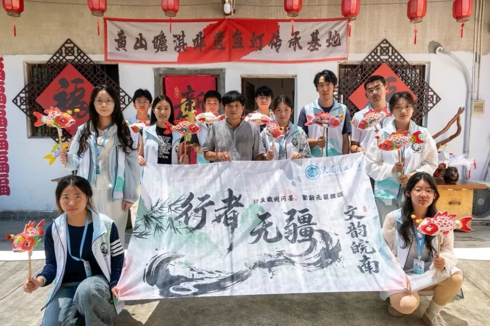
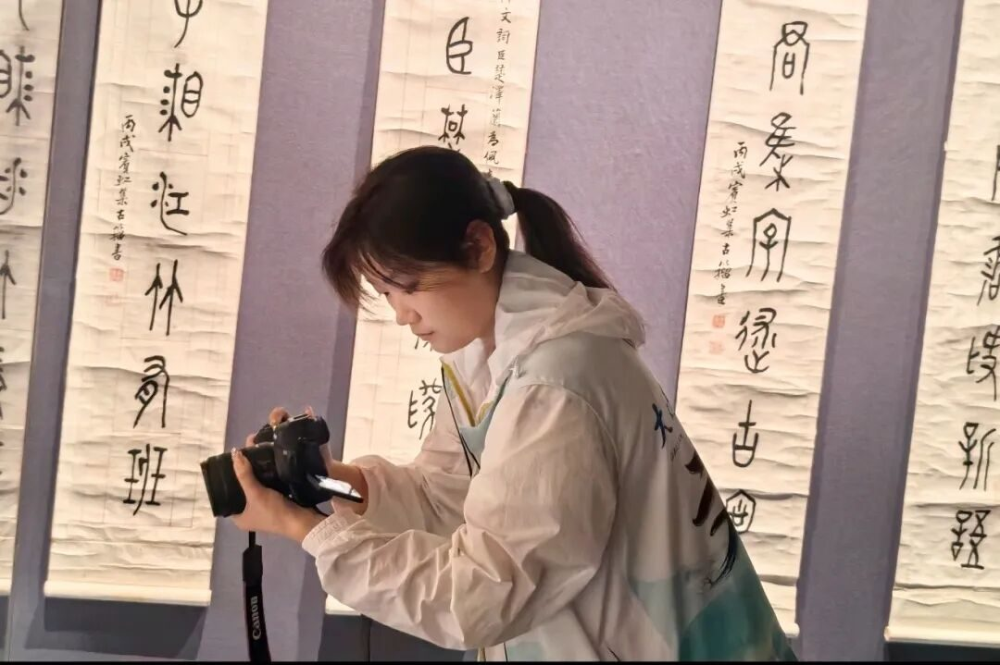

【行者无疆·文韵皖南】个人实践感悟——童思嘉



致第十八期行者无疆
这是我最后一天在黄山时发出的朋友圈的最后一句话，而此刻，五日徽州之行，也落下帷幕。整趟旅程，我既是寻访非遗的参与者，也是这段故事的记录者。


首日走进徽州糕饼工坊，亲手体验制作烧饼，把拌好的梅干菜肉馅包进去，再慢慢按压成饼。以前只知道黄山烧饼是徽商赶路随身携带的干粮，是徽州家家户户都熟悉的吃食。真正亲手做过才明白，这小小的一块饼，承载的是当地人实实在在的生活记忆。
指尖触到柔软的面皮，闻得到馅料的咸香，才真切感受到，非遗并不都藏在庄重的展馆里，它也可以是烟火日常里，一口熟悉的味道。


来到老胡开文墨厂，我拿起细笔体验墨锭描金。面前的墨锭上雕刻着繁复古朴的纹样，我握着纤细的金笔，顺着凹凸的纹路慢慢填色，安安静静感受这个过程。
看着金粉一点点附着在墨面，古朴的纹样慢慢焕发光彩，我好像能想象旧时墨工日复一日伏案描金的模样。徽墨不只是一方研磨写字的墨块，它把山林的松烟、匠人的心思，还有徽州绵延千年的文气，都揉进了这一方小小的墨锭之中。



到屯溪杨文笔庄体验制笔，桌上摊着一堆蓬松柔软的兽毫。跟着杨文老师的示范，我试着梳理毫毛，一点点对齐锋尖。手里的毛料软软散散，想要理顺并不简单。
一支好笔讲究尖齐圆健，看似简单的笔头，背后是一代代制笔人摸索出来的经验。指尖抚过细碎笔毫，我也慢慢读懂，一支徽笔，藏着文人笔墨里独有的风雅。


走入古朴清幽的瞻淇古村，远离了市井的喧嚣，青砖铺就的小院静谧安然，空气中萦绕着淡淡的竹篾清香，我们听汪近午老师娓娓道来瞻淇鱼灯的百年故事。
鱼灯是扎根古村最深厚的乡土民俗，从明清流传至今，早已融入村民的岁岁年年。“鱼”通“余”，一盏盏灵动的鱼灯，承载着村里人岁岁丰年、平安顺遂的朴素期许，是独属于古村的吉祥寓意与浪漫寄托。
古村的风穿过院落，老师向我们演示鱼灯锣鼓声。看着自己亲手画成的小鱼灯摆在身前，心里生出一种简单的欢喜。鱼灯寄托着当地人年年有余的美好期盼，它不只是一件手作，更是属于整个村落的乡愁，是代代流传下来的乡土浪漫。


书本上抽象的 “非遗” 二字，在取景器里慢慢变得具体可感。我看见方韶大师不计得失培育学徒的坚守，读懂周健老师 “古法为本，守正创新” 的传承理念，体会毛胜利老师数十年坚守焙房的不易，也听见杨文老师、汪近午老师对老手艺生生不息的期许。
从前只在文字中读到的技艺，如今亲眼看见刀锋凿过青石、松烟锤炼成墨、青檀化为素纸、竹篾化作游鱼，我才真切懂得，每一门非遗背后，是一方水土的滋养，是一代代匠人耗尽岁月的默默托举。
此行收获的，不只有镜头记录下的徽州风物，还有并肩同行的伙伴。五天朝夕相伴，我们一同赶路，一同探访。实践很短，也正因如此带给我的戒断反应无限大。
或许我永远都不会忘记那些时刻，文宣 F3 为一个调试成功的 SVG 效果忍不住尖叫；一篇推送正式发出后，我们一遍又一遍点开欣赏；我们期待着为每一日的推文埋下独属于我们的小巧思。袁婵学姐推送大师！在遇到她之前我还不知道推送原来可以这么好看，每天都会提供满满的情绪价值，做推送这件事更像是为我们留下一段精美的回忆~羽佳刚见面的时候觉得她很腼腆，后来发现她的表情包很抽象哈哈，特别靠谱！每天和她在一起做推送都会尖叫（至今不确定那天的尖叫声被多少人围观过），还有每天仲大师，朱老师，组长质感满满的照片，让我们选图时挑花了眼。（再次感谢各位大师小师pyq供图！）婉若学姐每天都超级高能量！跟她在一起超级开心！雨珊学姐带我们尝遍当地美食，感觉她说话很温柔特别有耐心~子涵学姐总能把繁杂的事情处理得特别妥当，尤其是采访的时候感觉整个人都在发光！还有闫磊队长每天都淡淡的，但其实每件事情都默默地关注着，还有很多很多......总而言之很幸运加入行者，也很幸运遇见这里的每一个人。
我们并肩穿行在徽州青砖黛瓦的街巷，看古邑风物，尝地道风味，把无数鲜活细碎的瞬间一一收藏。这是属于我们的群像，是滚烫热烈的青春最好的模样，也成为我心底一段闪闪发光、难以磨灭的珍贵回忆。
山水终有归途，但匠心没有终点。硬盘里存下的照片录像，公众号里一篇篇成文的推送，都是此行留给我的沉甸甸的馈赠。往后，我依旧愿意做一名记录者，把此行收获的感动与思考收好，继续去发现、去讲述那些藏在烟火里的匠心故事。
行者无疆
来源 | 行者无疆实践团
图片 | 行者无疆实践团
文字 | 童思嘉
编辑 | 童思嘉
审核 | 闫 磊
责编 | 邹靓靓 周 亮